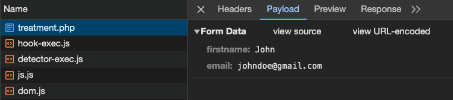
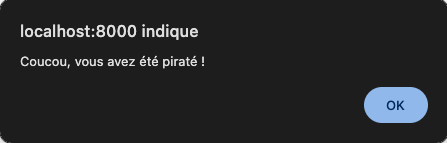

2 - Les formulaires en PHP : récupération des données
Introduction
Dans cette quête, nous allons aborder la manière de récupérer et d'afficher les données issues d'un formulaire. Cela va se passer côté serveur avec PHP.
🤓 À la fin de cette quête, tu seras en mesure de :
- ✅ Connaitre les différentes méthodes de récupération de données suite à la soumission d'un formulaire
- ✅ Récupérer ces données et les utiliser dans le contexte voulu
- ✅ Afficher les données et mettre en place une protection contre les injections XSS (Cross-site scripting)
Sommaire
Mise en place
Reprenons l'exemple donné à la fin de la quête traitant de la structure HTML d'un formulaire.
À peu de choses près, voici ce que nous avions :
<form action="treatment.php" method="post">
<label for="firstname">Nom</label>
<input type="text" id="firstname" name="firstname">
<label for="email">Email</label>
<input type="email" id="email" name="email">
<input type="submit" value="Valider">
</form>
Parlons plus en détail des attributs action, method et de ce fameux name placé sur les champs du formulaire.
Envoi des données : l'attribut action
Lorsque l'utilisateur soumet le formulaire, une requête HTTP est créée.
Elle a pour destination le fichier défini dans l'attribut action de ta balise <form> et elle contient toutes les données saisies par l'utilisateur.
Dans notre exemple, la redirection se fera donc vers le fichier se trouvant à l'adresse treatment.php
Si jamais l'attribut action est vide ou non présent, alors la redirection se fera vers l'adresse courante, c'est-à-dire sur la même page que celle affichée dans le navigateur au moment de la soumission.
Verbe HTTP : l'attribut method
Pour un formulaire HTML, il existe deux méthodes de transmission de données : GET et POST. Nous l'avons évoqué dans une précédente quête, pour choisir l'une ou ou l'autre de ces deux méthodes, il faut utiliser l'attribut method de ta balise form.
<form method="post" action="treatment.php">
ou
<form method="get" action="treatment.php">
Quelle différence y a-t-il entre ces deux méthodes ?
La méthode GET
- Utilisée pour envoyer les données via l'URL.
- Les données sont visibles dans la barre d'adresse du navigateur.
- Principalement utilisée pour des actions non sensibles et persister des données de page en page ou pouvoir communiquer ou conserver l'état d'un formulaire (partage ou sauvegarde en favoris d'une recherche par exemple).
- Limite de taille pour les données transmises (2048 caractères maximum autorisés dans une URL).
- get sera la valeur par défaut si l'attribut
methodest absent ou vide.
Lorsque tu soumets ton formulaire, qu'observes-tu ? Rien ? Regarde bien la barre d'adresse de ton navigateur.
http://localhost:8000/treatment.php?firstname=John&email=johndoe%40gmail.com
Que s'est-il passé ?
En précisant que la méthode d'envoi des données du formulaire est en GET, toutes les données vont transiter par l’URL.
En effet, tu peux constater qu'à la suite de l'URL de notre page http://localhost:8000/treatment.php, on retrouve un ensemble de clé=valeur. Avec, devant, un ? pour indiquer le début de la liste des paramètres. Chaque paire de clé/valeur est ensuite séparée par des & (appelé couramment "ET commercial" mais le vrai nom typographique est "esperluette").
Tu auras remarqué que chaque clé correspond à l'attribut name="..." de chaque champ de ton formulaire et que chaque valeur associée correspond aux données saisies dans les champs correspondants.
Dernier point de détail, où est passé le @ de l'adresse mail ?!?
Il a été remplacé par %40. À l'origine, il n'est pas prévu qu'une URL comporte des caractères spéciaux. Certains caractères sont donc substitués par leur version encodée. C'est ainsi que les espaces, eux, sont remplacés par %20 par la plupart des navigateurs. Ou par le signe "+" dans le cas de firefox. (Le signe "plus", étant lui même remplacé par %2 )
La méthode POST
- Les données sont envoyées de manière invisible (dans le corps de la requête HTTP) et ne sont pas affichées dans l'URL.
- Adaptée pour des actions plus sensibles (formulaire d'inscription ou de connexion par exemple). ⚠️ Attention, cela ne veut pas dire que la soumission des données est plus sécurisée qu'avec la méthode GET.
- Pas de limite de taille prédéfinie pour les données.
Les données ne sont plus présentes dans l'URL, mais elles sont bien "cachées" quelque part.
http://localhost:8000/treatment.php
Avant de soumettre ton formulaire, ouvre ta console et rends-toi sur l'onglet Réseaux (ou Network en anglais).
Grâce à ta console ouverte, tu peux suivre l'état de toutes tes requêtes HTTP vers le serveur. Si tu cliques sur la ligne treatment.php après avoir soumis le formulaire, tu peux accéder à ces données dans le nouvel onglet Payload qui est apparu. Tu peux y retrouver toutes les informations envoyées par le formulaire.

Bon, très bien, tu sais par où ça passe à présent et tu perçois un peu mieux la différence entre ces deux méthodes..
Regardons à présent comment récupérer les données côté serveur.
Récupération des données
À la réception de la requête HTTP, PHP va prendre ces données et les mettre dans des "boîtes" que tu vas pouvoir utiliser. En voici quelques-unes :
$_GET$_POST$_REQUEST$_FILES
Ces boîtes sont de la famille des superglobales et tu vas pouvoir y accéder dans ton fichier de traitement de données. Les superglobales sont des variables prédéfinies toujours accessibles indépendamment de leur portée. Elles contiennent des informations importantes sur le script en cours d'exécution et sont automatiquement créées par PHP.
Les variables internes qui sont toujours disponibles, quel que soit le contexte
Le point commun à toutes ces superglobale est leur type. Elles sont en effet toutes de type array, ce sont des tableaux.
GET
Pour récupérer les valeurs d'une requête HTTP envoyées avec une méthode GET, tu pourras par exemple utiliser la superglobale $_GET et parcourir ses index qui correspondent aux valeurs des attributs name des champs du formulaire.
<!-- index.html -->
<input ... name="firstname">
<input ... name="email">
⬇️
//treatment.php
$firstname = $_GET["firstname"];
$email = $_GET["email"];
Dans notre exemple, on récupère le prénom et l'email de notre utilisateur aux index firstname et email du tableau $_GET que l'on stocke ici dans des variables du même nom.
Tu peux vérifier le contenu de l'ensemble de cette variable $_GET en faisant un var_dump() :
var_dump($_GET);
Astuce
Tu peux transmettre des données en GET vers une autre page simplement en créant un lien et sans utiliser de formulaire :
<a href="page.php?nom=John&age=25">Cliquez ici</a>
POST
Le formulaire a été soumis avec la méthode POST ?
Aucun problème, cela fonctionne exactement pareil.
Tu vas pouvoir récupérer les données grâce a la superglobale $_POST qui est donc aussi un tableau.
<!-- index.html -->
<form method="post">
<input ... name="firstname">
<input ... name="email">
</form>
⬇️
//treatment.php
$firstname = $_POST['firstname'];
$email = $_POST['email'];
Tu peux vérifier le contenu de l'ensemble de cette variable en faisant un var_dump() :
var_dump($_POST);
En résumé
- Utilise POST pour des informations sensibles qu'on ne souhaite pas afficher dans la barre d'adresse ou de la donnée volumineuse (c'est-à-dire pour la plupart des formulaires).
- Utilise GET dans les autres cas, tels que les formulaires de recherche principalement.
Aller plus loin
La requête HTTP est au cœur des préoccupations quotidiennes du développeur web. Découvre plus en détail les règles et les contraintes de ce protocole applicatif en consultant la ressource ci-dessous.
- Quête 102 (hors archive)
Consulte la ressource ci-dessous pour en apprendre plus sur les caractères spéciaux encodés dans une URL.
Traitement des données
Maintenant que nous avons récupéré nos données à l'endroit qui nous intéresse, qu'allons-nous en faire ? Cela va dépendre de ta logique métier et de l'utilisation de ton application web. Tu vas pouvoir les afficher, les manipuler, les stocker en BDD, les transférer par mail, etc.
Si tu soumets ton formulaire en POST et que tu souhaites afficher le champ Nom, voici ce que tu pourrais faire :
<p>Bonjour <?php echo $_POST['firstname'] ?> !</p>
<!-- ou avec la syntaxe courte de la fonction echo() -->
<p>Bonjour <?=$_POST['firstname']?> !</p>
C'est aussi simple que ça ? Oui. Enfin presque. Nous verrons plus détail la manipulation, la sécurisation et la persistance des données dans une autre quête. Mais pour le moment, attardons-nous un instant sur une première faille de sécurité : les injections de scripts (XSS).
Failles XSS : Cross-site scripting
Les attaques XSS (Cross-Site Scripting) sont l'une des vulnérabilités les plus courantes sur le web. Elles surviennent lorsque des données non fiables sont insérées dans une page web sans être correctement échappées ou filtrées, permettant ainsi à un attaquant d'injecter et d'exécuter du code JavaScript malveillant côté client. Cela peut entraîner le vol de sessions utilisateur, la redirection vers des sites frauduleux, même la compromission du compte utilisateur ou toute autre modification de l'interface et de l'expérience utilisateur.
🔬 Expérience
Avec ton navigateur, accède à la page contenant ton formulaire et insère ce code dans le champ Prénom :
<script>alert('Coucou, vous avez été piraté !')</script>
Que se passe-t-il lorsque tu soumets le formulaire et que la page treatment.php cherche à afficher le prénom ? 😱

Eh oui, le script est exécuté. Imagine les conséquences s'il s'agit d'un message enregistré en BDD (comme un commentaire de forum par exemple) puis affiché à tous les utilisateurs. L'utilisateur malveillant pourrait laisser libre court à toute sa créativité pour prendre le contrôle de l'interface grâce à cette formidable porte d'entrée.Protection en PHP : htmlentities()
Un bon moyen de se protéger est traduire tous les caractères utilisés pour générer du code HTML comme les chevrons < et >. Il existe une fonction PHP pour ça : htmlentities().
En utilisant cette fonction partout où tu affiches des données provenant d'un utilisateur, tu protèges ton application, et donc tes utilisateurs, des injections XSS. Voici ce que cela donne :
<p>Bonjour <?php echo htmlentities($_POST['firstname']) ?> !</p>
<!-- ou avec la syntaxe courte de la fonction echo() -->
<p>Bonjour <?=htmlentities($_POST['firstname'])?> !</p>
🎯 Exercice
Reprenons notre exemple précédent et affichons un message à l'utilisateur suite à la soumission du formulaire.
- Crée un fichier
index.htmlqui contient un formulaire permettant à l'utilisateur de saisir les données suivantes :- l'objet de son message (par exemple : Prendre rendez-vous, Demander un devis, M'inscrire à la newsletter, …)
- son nom
- son email
- Crée un fichier
treatment.phpdans le même dossier que le fichierindex.htmlet affiche le message ci-dessous où les mots en gras sont remplacés par les données saisies de l'utilisateur. - Le formulaire enverra les données en POST vers ce fichier.
- Attention aux failles XSS 🤓
Bonjour NOM, Merci pour votre message. Vous nous avez indiqué vouloir SUBJECT. Nous vous contacterons à l'adresse EMAIL très rapidement. À bientôt,
💡 Tips Pour gérer l'objet du message, tu peux utiliser des champs
<input>de type radio ou une liste déroulante avec un champ<select>. Regarde la quête qui t'est donnée en ressource complémentaire.
Voir la solution
Fichier index.html : le formulaire avec input radio
<form action="treatment.php" method="post">
<fieldset>
<legend>Je souhaite</legend>
<label>
<input type="radio" name="subject" value="prendre rendez-vous">
Prendre rendez-vous
</label>
<label>
<input type="radio" name="subject" value="demander un devis">
Demander un devis
</label>
<label>
<input type="radio" name="subject" value="être inscrite·e à la newsletter">
M'inscrire à la newsletter
</label>
</fieldset>
<label for="name">Nom</label>
<input type="text" id="name" name="name">
<label for="email">Email</label>
<input type="email" id="email" name="email">
<input type="submit" value="Valider">
</form>
Fichier treatment.php : l'affichage
<p>
Bonjour <?=htmlentities($_POST['name'])?>,
<br>
Merci pour votre message.
<br>
Vous nous avez indiqué vouloir <strong><?=htmlentities($_POST['subject'])?></strong>.
<br>
Nous vous contacterons à l'adresse <?=htmlentities($_POST['email'])?> très rapidement.
<br>
À bientôt,
</p>